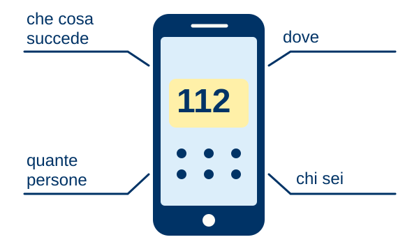

Appunti illustrati · Protezione civile · Secondaria di II grado
Come si chiama il 112
Che cosa dici all’operatore?

La teoria
Evidenziatori: giallo = azioni; azzurro = numeri e luoghi; rosa = attenzione.
- Chiama il 112: nel Lazio è l’unico numero per qualsiasi emergenza.
- NUE: Numero Unico Europeo di Emergenza. La centrale smista la chiamata all’ente competente.
- Descrivi il fatto, il luogo, le persone e le loro condizioni.
- Dallo smartphone la posizione arriva in automatico, se il GPS è attivo. Descrivi comunque il luogo.
- Segnalazioni non urgenti di protezione civile: Sala Operativa Lazio, 803 555.
Le regole
- Riferisci solo ciò che sai.
- Non riagganciare prima che l’operatore abbia tutte le informazioni.
- Se hai chiamato per errore, non riagganciare: spiegalo.
- Nelle prove non comporre il numero.
Esempio guidato
Esempio didattico: una persona ha un malore in casa. Flavio chiama il 112.
Racconta che cosa è successo.
«Una persona ha un malore in casa».
Indica dove sei.
«Sono a [Comune], in [via e civico], al [piano]».
Spiega quante persone sono coinvolte e come stanno.
«È una persona sola. È cosciente e parla».
Presentati e resta in linea.
«Sono Flavio [cognome]. Il mio numero è […]». Poi rispondo alle domande.
Lo schema
- Componi il 112
- Che cosa e dove
- Persone e condizioni
- Chi sei, resta in linea
Occhio all’errore
- «Ogni soccorso ha un numero». Nel Lazio, per qualsiasi emergenza: 112.
- «Attivo direttamente il Gruppo». Lo attivano il Sindaco o la Sala Operativa regionale: tu chiami il 112.
Prova tu
Esempio didattico: Silvia vede sterpaglie in fiamme dalla strada. Non vede persone.
Simula a voce o per iscritto la chiamata. Non telefonare davvero.
Indizio: Pensa prima a dove sei rispetto al fuoco. Non vedere persone non vuol dire che non ci siano.
Soluzione
Resta lontano dalle fiamme e dalle strade percorse dal fumo; non provare a spegnerle. Al 112 di’ che cosa brucia, dove (Comune, località, un riferimento visibile) e verso dove va il fumo. Di’ che non vedi persone, ma non puoi escluderle. Lascia nome e numero e resta in linea.
Fonti: Segnalare al 112 · 8 ottobre 2026 · Giornata del 112 · Numeri utili · Glossario.
Manuale · appendici, numeri utili · Approfondisci: Attivazione dei soccorsi.
Testi e disegni: Gruppo Comunale Volontari di Protezione Civile di Genzano di Roma, licenza CC BY 4.0.